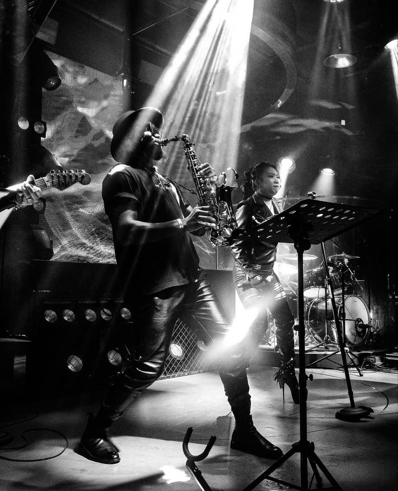
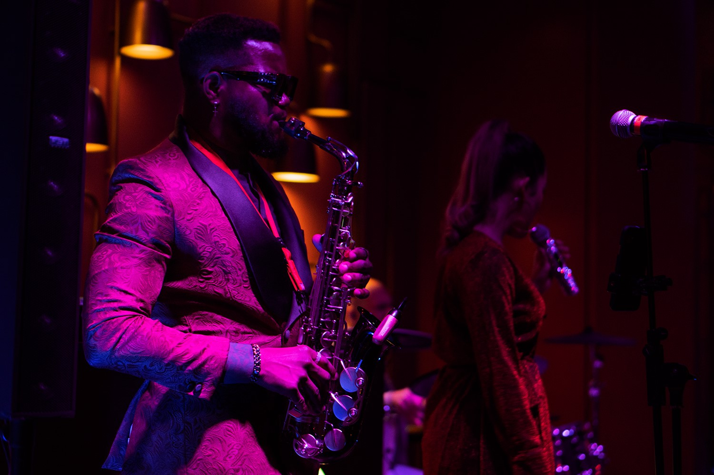
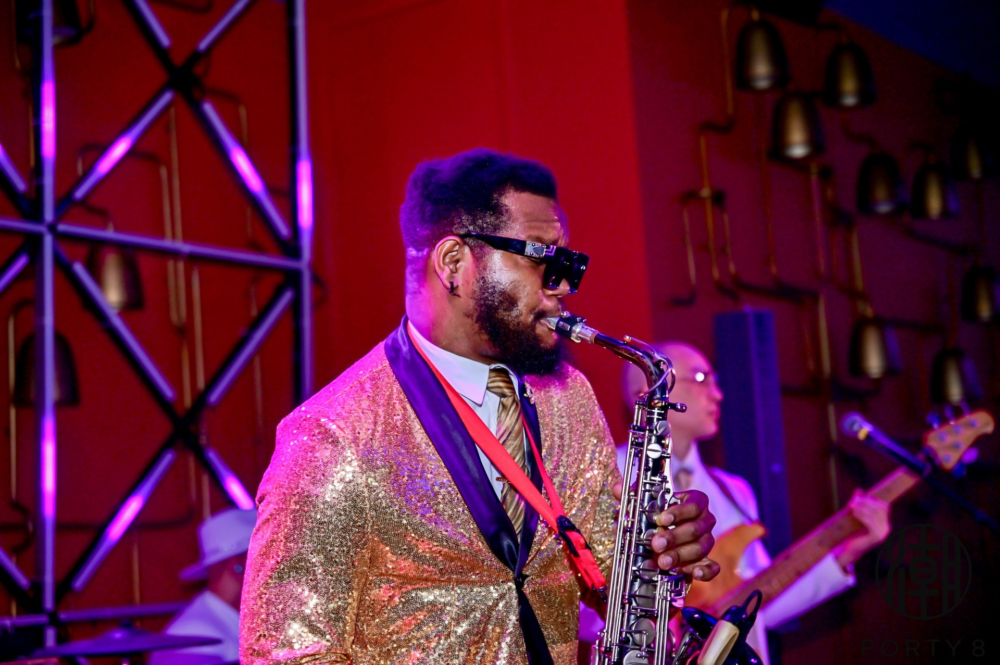

One and a half Decade of Musical Mastery: My Journey as a Professional Saxophonist
The melodious notes of the saxophone have been the backdrop of my life's journey, echoing through the highs and lows of my professional career. Over the past decade, I have had the privilege of working with various bands, both as a sideman and a solo artist, ultimately culminating in the realisation of my dream – organising headline concerts. This write up chronicles my musical journey, which began in 2004 and has been a harmonious blend of passion, dedication, and the pursuit of artistic excellence.
The Early Years: A Saxophonist's Ascent
My journey as a professional saxophonist commenced in 2007 when I decided to pursue my lifelong passion for music as a career. This decision marked the inception of a journey filled with both challenges and achievements. I began by honing my saxophone skills, dedicating countless hours to practice and musical education.
Solo Artistry

In 2010, I took a significant step in my career by venturing into solo performance. I Organised my debut Gospel Concert, "HORNS OF VALOR," which was met with critical acclaim and established my identity as a solo artist. The CONCERT featured a fusion of jazz, gospel, Traditional Nigerian Music and soul, showcasing my proficiency in creating soul-stirring melodies. As a solo artist, I performed at various music Concerts across West Africa and Asia, sharing my passion for the saxophone with a diverse audience.
Headline Concerts: Horn Of Valor 1(2010), Jazz in the Manger(2011), 3hours of Sentimental Worship with TSAX 1(2011), Horn Of Valor 2(2012), 3hours of sentimental worship with TSAX 2 (2013), TSAX Live in concert 1(2016)china, TSAX Live in Concert 2(2017)China.
From 2010-2016, after years of honing my skills and building a dedicated fan base, I took a giant leap forward in my career by organizing my headline concerts. These concerts marked a significant milestone in my journey as a professional saxophonist. They were the culmination of years of dedication and hard work, a testament to the relentless pursuit of my musical dreams.
Headline Concerts: Horn Of Valor 1(2010), Jazz in the Manger(2011), 3hours of Sentimental Worship with TSAX 1(2011), Horn Of Valor 2(2012), 3hours of sentimental worship with TSAX 2 (2013), TSAX Live in concert 1(2016)china, TSAX Live in Concert 2(2017)China.


Debut Album: Alongside my concert in 2016, TSAX LIVE IN CONCERT, i released a debut Album Titled SAxPiration, it was a massive success and all copies were sold out and had to make more copies. Saxpiration has been a longterm dream for me, and bringing it to realization only thought me that there's nothing impossible to achieve.
Life in the UK: With all these wealth of Experience through my musical Journey, i am more than willing to bring my musical expertise to the UK Audience and beyond to serenade my audience and deliver a customer satisfactory Service.
I have worked with Different people from different Backgrounds, including Bands Such as Sugar Band with El-live productions, and Elite Band with Elite media.
My journey as a professional saxophonist has been an evolution of passion, perseverance, and musical exploration. From my early days as a novice to collaborating with various bands and stepping into the spotlight as a solo artist, it has been more than 15 years filled with musical growth and self-discovery. The organization of headline concerts served as the pinnacle of my career, allowing me to share my love for the saxophone with an ever-growing audience. As I continue this journey into the future, I remain committed to creating music that resonates with the soul and inspires others to pursue their dreams, just as I have pursued mine through my beloved saxophone.